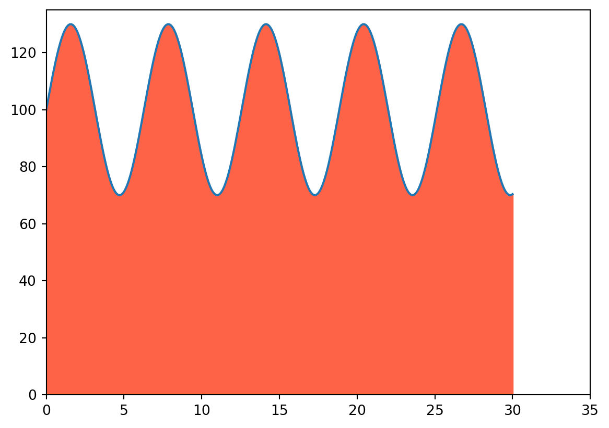

Integrals in calculus can be a challenging concept to grasp, but they can also be a powerful tool for solving various problems in business management and engineering. Integrals can be used to calculate quantities such as total cost, total revenue, and consumer surplus, among others. They are also essential in modeling and analyzing time-dependent phenomena in financial markets, operations management, logistics, and so on.
Understanding Integrals
In simple terms, an integral can be seen as the “opposite” of a derivative. If a derivative gives you the rate of change at a certain point, an integral gives you the total accumulation over a certain range.
Imagine you own a factory, and you produce goods at a certain rate per day. This production rate can vary from day to day. If you wanted to know the total goods produced in a month, you could sum up the daily production rates. In the world of calculus, this summing process is analogous to an integral.
Now, let’s illustrate the concept of the integral using Python. We’ll use the library scipy, which provides functions for numerical integration. First, let’s define a simple function to represent the rate of goods production per day.
Code
import numpy as npfrom scipy.integrate import quadimport matplotlib.pyplot as plt# This is our production rate functiondef production_rate(t):return (100+30*np.sin(t))t = np.linspace(0, 30, 300)ft = production_rate(t)g = np.zeros(ft.shape)plt.close()plt.xlim(0, 35)plt.ylim(0, 135)plt.plot(t, ft)plt.show()
The function production_rate(t) is a somewhat arbitrary function representing the rate of goods production for each day t. It’s assumed that the production rate varies in a sinusoidal manner around a baseline of 100 units/day, to mimic the variations in production you might encounter in a real factory.
Now, we can compute the total goods produced over a month (let’s approximate a month as 30 days). We use the quad function from scipy.integrate, which performs numerical integration.
Code
plt.close()plt.xlim(0, 35)plt.ylim(0, 135)plt.plot(t, ft, t, g)plt.fill_between(t, ft, g, color="tomato")plt.show()total_production, error = quad(production_rate, 0, 30)print(f'Total production over 30 days: {total_production} units')

Total production over 30 days: 3025.3724565033726 units
Real-World Applications
1. Economics and Finance: Integrals are used in economics and finance to calculate areas under curves. For instance, in a supply and demand graph, the area between the supply and demand curves up to the market price line is called the consumer surplus, which can be calculated using integrals. Similarly, the area under a company’s revenue or cost function gives the total revenue or total cost, respectively.
2. Operations Management: In the field of operations management, integrals can be used to model and analyze continuous production processes. If a factory’s production rate is represented by a function of time, the integral of that function over a given time period gives the total production.
3. Logistics: In logistics and supply chain management, integrals can be used to calculate total transportation costs, total inventory held over time, and other cumulative quantities.
4. Civil Engineering: Civil engineers use integrals when calculating the load distribution on beams, the moment of inertia, and when determining the stress and strain on various materials.
For example, to calculate the center of mass of an irregularly shaped object, engineers would use calculus and specifically the concept of integration.
Code
from sympy import*# Assume an object's mass distribution along the x-axis is given by the function:def mass_distribution(x):return x**2+6*x +9# Arbitrary function for illustrative purposes.# We want to find the center of mass of this object over the interval from 0 to 2 meters.x_values = np.linspace(0, 2, 100)mass_values = mass_distribution(x_values)x = symbols('x')f = mass_distribution(x)x_area = np.linspace(0, 2, 100)f_area = lambdify(x, f)(x_area)plot(f, xlim=(-5, 5), ylim=(0, 80), fill={'x': x_area,'y1':f_area,'color':'tomato'})# Calculate total mass:total_mass, _ = quad(mass_distribution, 0, 2)# Now calculate x-coordinate of the center of mass:def integrand(x):return x * mass_distribution(x) # This is x * dm(x).center_of_mass, _ = quad(integrand, 0, 2)center_of_mass /= total_massprint(f'Center of mass: {center_of_mass} m')
Center of mass: 1.1632653061224485 m
5. Computer Graphics: Integrals are used extensively in computer graphics, especially in rendering. When calculating the lighting of a point, we would integrate over all possible light paths that can reach the point. This is the basis for techniques like ray tracing and radiosity.
6. Machine Learning: Many machine learning algorithms, especially those in deep learning, involve optimization of continuous functions. The process of training a neural network, for instance, involves performing gradient descent on the cost function, which is an integral over the entire training set.
7. Algorithm Analysis: Integrals can be used to analyze algorithms that work with continuous data or where the performance of the algorithm changes continuously with the input size. An integral can provide the average case performance of such an algorithm.
These are just some examples. The applications of integrals are vast and extend to many other fields like electrical engineering, mechanical engineering, aerospace, and even in theoretical computer science and data science. Understanding how to apply the concept of integrals can thus provide a solid foundation for problem-solving in these disciplines.